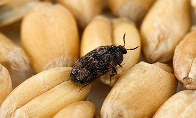

FUMIGACION DE GRANOS ALMACENADOS
Conservar la calidad de sus granos es el pilar fundamental de nuestros servicios para granos almacenados. La integración de nuestros servicios de fumigación de granos de tecnología avanzada con nuestro programa patentado de protección de granos ofrece una solución segura y efectiva para reducir la cantidad de granos dañados por insectos y aumentar la calidad de sus granos.

FUMIGACION DE GRANOS ALMACENADOS
Tratamiento a granos almacenados a base de agentes fumigantes en silos, celdas, silos bolsa, estibas. Aplicación de tabletas mediante sondas y/o auto transilaje y/o Placa Degesch. Nuestro sistema de recirculación de gas fosfina, nos permite distribuir uniformemente la fosfina en el espacio intergranario, logrando un tratamiento efectivo y controlado. El control se desarrolla a través de mediciones de concentración de gas durante el tiempo de exposición, siendo datos fundamentales para determinar la efectividad del servicio. Se incluye sanitización del área del tratamiento, como así también asesoramiento técnico y fitosanitario
Nuestro servicio de control de plagas es ideal para:
¿Cómo trabajamos?
Desde la prevención de plagas hasta el control
Desde la prevención (a través de la inspección, muestras de granos, aplicación superficial y rociado de contenedores vacíos y el perímetro) hasta el control (a través de la fumigación de granos almacenados o fumigación estructural), las soluciones para el almacenamiento de productos de Ecolab eliminan las plagas de sus granos y protegen a los trabajadores.Según cada caso que se presente en nuestros clientes, realizamos:
Controles físicos (exclusiones) de los espacios para evitar que las plagas ingresen a las plantas.
Controles a través de monitoreo de insectos con feromonas o lámpara de captura.
Preventivos en depósitos, plantas y maquinarias utilizadas para la elaboración de subproductos mediante aspersión de líquidos autorizados por los organismos oficiales.
Preventivo en depósitos mediante la utilización de ULV (ultra bajo volumen). Con este método llenamos el volumen de los depósitos o plantas con líquidos preventivos.
Inyección de fosfina en SILOS, CELDAS, DEPOSITOS, CAMARAS, CONTENEDORES, ETC.
Vacío e inyección de CO2 en contenedores para mercadería orgánica.
Fumigación/expurgo a concentraciones fulminantes
Durante el almacenamiento de granos pueden presentarse diversos factores que afectan directamente su calidad, traduciéndose en pérdidas económicas. Los infestaciones con insectos plagas son el principal factor de deterioro, ya que actualmente se han registrado alrededor de 250 especies de insectos-plaga que afectan productos almacenados, de los cuales 20, de tipo primario, son considerados de gran importancia.

Control de insectos en todos sus estadíos
En FUMITEC implementamos como principal método de control el uso de gas Fosfina que es un proceso que ha sido utilizado por mas de 70 años y destaca por su ventaja ecológica ante otros compuestos. Este gas es utilizado al realizar fumigaciones en granos y mercaderías ya que penetra en los estigmas durante la respiración de los insectos y plagas, exterminándolos de inmediato. Este compuesto es inflamable, por lo que es susceptible al proceso de combustión, sin embargo, el olor a ajo que desprende sirve como alarma.